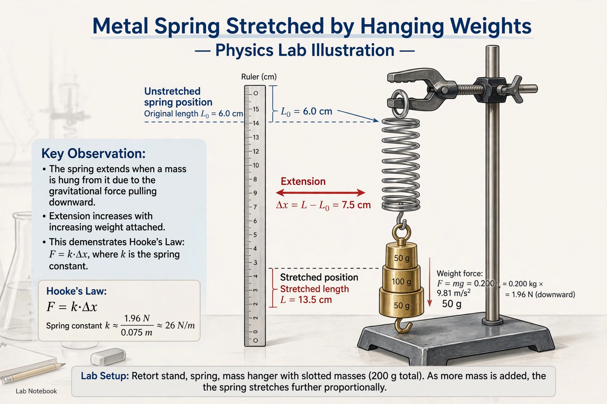

Hooke's law is a law of physics stating that the force F needed to extend or compress a spring by some distance x scales linearly with respect to that distance: F = kx, where k is the spring constant. It is named after 17th-century British physicist Robert Hooke.

| Hooke's law | |
|---|---|
| Formula | F = −kx |
| Named after | Robert Hooke (1676) |
Hooke published the law as a Latin anagram in 1676, ceiiinosssttuv, revealed in 1678 as ut tensio, sic vis — 'as the extension, so the force'.
Generalised to stress and strain, Hooke's law underpins elasticity theory, with Young's modulus relating them. Beyond the elastic limit, materials deform plastically and the law no longer holds. It explains simple harmonic oscillation of springs and relates to resonance.